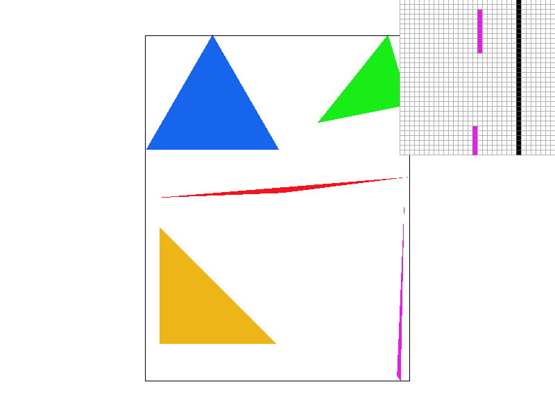
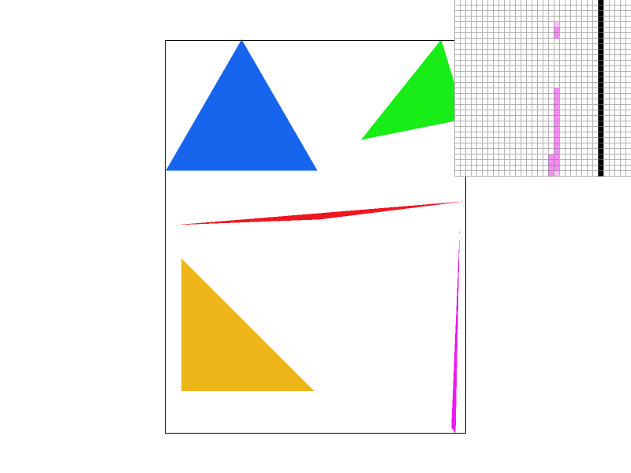
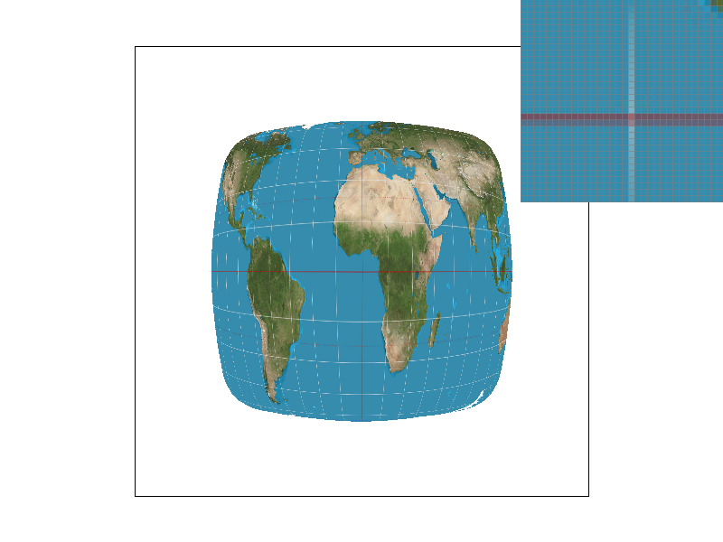
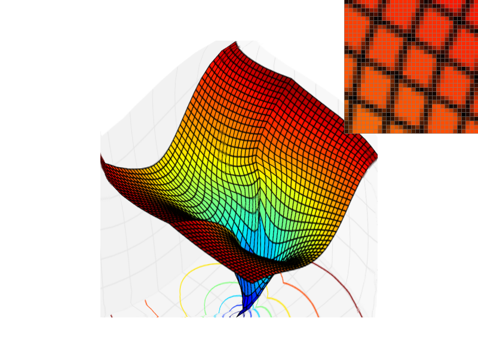

In this homework, drawing from lecture 2-5, I implemented a comprehensive rasterization pipeline for rendering 2D graphics, focusing on antialiasing techniques, geometric transformations, color interpolation, and texture mapping.
The first task involved creating a function to rasterize single-color triangles using point-in-triangle tests and a simple sampling method, ensuring efficiency and correctness regardless of the triangle's orientation.
The second task advanced to antialiasing by implementing supersampling, which smooths out the edges of triangles by averaging the colors of multiple sub-pixel samples, enhancing the visual quality of the rendered images.
For the third task, I integrated geometric transformations, enabling the manipulation of shapes through translation, scaling, and rotation based on the SVG specifications. This allowed for more complex scene arrangements.
The fourth task focused on color interpolation within triangles using barycentric coordinates, enabling the rendering of gradients and more nuanced visual effects. This technique calculates colors across the triangle's area, blending vertex colors smoothly.
The fifth and sixth tasks delved into texture mapping, where I implemented nearest neighbor and bilinear interpolation methods for sampling textures, allowing textures to be mapped accurately onto triangles. This was further enhanced with level sampling through mipmaps to optimize texture sampling at various scales, including techniques for nearest level selection and linear interpolation between mip levels for higher quality and performance in texture rendering.
These tasks collectively built a versatile rendering engine capable of drawing 2D graphics with smooth color transitions, detailed textures, and efficient antialiasing.
I utilized ChatGPT to create concise summaries of what I learned based on the prompts I provided throughout the project. At times, I turned to Perplexity.ai for clarity on concepts. I treated AI as a guide or teaching assistant, aiding me in debugging or grasping complex mathematical theories and understanding foundational code.
I learned about the structure and syntax for class inheritance, constructor usage, and the typedef keyword in C++. Specifically, I learned how to inherit from a base class or struct, the purpose and syntax of constructors along with their initialization lists, and the use of typedef to create type aliases, particularly in the context of enumerations. Additionally, I gained insights into organizing helper functions within a C++ file, including the definition of a static helper method outside of class definitions to maintain encapsulation and prevent it from being accessible outside the intended scope. I learned that the swap() function in C++ can exchange the values of two variables, including those of float type, and is versatile enough to work with fundamental data types, objects, and containers. I learned how to declare and use Vector2D objects in C++ to represent 2D vectors with specific coordinates and the significance of the inline keyword for suggesting compiler optimizations. I also explored different methods for printing float values in C++, including the use of std::cout with std::fixed and std::setprecision, and discovered various ways to achieve the maximum value comparison through the max function in C++. I learned that in C++, casting variables is best done using C++-style casts like static_cast, dynamic_cast, const_cast, and reinterpret_cast for their safety and clarity over C-style casts. Specifically, dynamic_cast is used for safe downcasting in class hierarchies, while const_cast can be used to remove the const qualifier from variables, though modifying originally const declared variables can lead to undefined behavior. I learned that both ++i and i++ can be used in a for loop increment in C++, but ++i is often preferred for its potential efficiency benefits, especially with non-primitive data types. The choice between them is mostly based on coding style preferences and the specific requirements of the context in which they are used. I learned that the auto keyword in C++ is used to automatically deduce the type of a variable from its initializer, simplifying the code, especially when dealing with complex types or iterators. Using auto with range-based for loops and iterators makes the code less verbose and more readable.
x_k = x + (2k+1)/N
I learned that to derive the formula for the x-coordinate of a sample point (x_k) in an N x N supersampling grid, the process starts by dividing the pixel into N equal segments along the x-axis. This division ensures that each sample point can be evenly distributed across the pixel. The crucial step involves centering the sample points within these segments, achieved by adding a specific offset (1/2N) to the base coordinate (x), which represents the pixel's starting edge. This offset accounts for half the width of a segment, effectively centering the sample point. For any given sample point, the formula incorporates its position (k) within the sequence, adjusting the offset to ensure the sample is precisely positioned at the center of its respective segment.
I learned that the area of a 2D triangle can be calculated using the determinant of a matrix formed by the coordinates of its vertices. This formula involves subtracting and adding the products of the vertices' coordinates and dividing by two to account for the triangle being half of a parallelogram. The determinant's absolute value ensures the area is positive, reflecting the geometric reality irrespective of the triangle's orientation in the plane. The determinant represents the area of a parallelogram formed by two vectors, indicating how much the shape scales during a linear transformation.
I learned that accurately calculating the index for each super-sampled sub-pixel within a 1D buffer is essential, taking into account the pixel's location in the original grid and the sub-pixel's relative position in its super-sampled grid. (y * width + x) * sample_rate + subsample_#.This formula ensures that each sub-pixel's color is accurately placed in the buffer, crucial for aggregating and averaging colors correctly to reduce aliasing in the final image.
I learned that accurately calculating the index for each super-sampled sub-pixel within a 1D buffer is essential, taking into account the pixel's location in the original grid and the sub-pixel's relative position in its super-sampled grid. (y * width + x) * sample_rate + subsample_#.This formula ensures that each sub-pixel's color is accurately placed in the buffer, crucial for aggregating and averaging colors correctly to reduce aliasing in the final image.
I learned how to derive a 2D rotation matrix using basic trigonometry, focusing on rotating points around the origin by a given angle. I discovered the process of converting angles from degrees to radians using the CGL library.
I create the x and y component vectors for the three points. I take the cross product of two on the vectors. If the result is positive, i.e., counter-clockwise, I do nothing. If it is negative, i.e., clockwise, I rearrange two points to change the triangle winding. I then iterate through the points and find the largest delta x and delta y along with the x/y points associated with them. This is my bounding box and it ensures that I do not have to look over the whole image which would be computationally expensive. I then use my inside_line function to check each point in the bounding box against the three lines formed by the tangent lines.
Incomplete extra credit: The only thing I do in the for loop is run the calculation derived in lecture 2. I also minimize rework by only calculating what is absolutely necessary. For example, I only calculate dX0 and dY0 once I have ensured the triangle winding is clockwise. The vectors used as tangent lines to check whether the point is inside the triangle are also precomputed (ie dX1 dY1 ...)
|

|

|
|
|
|
Supersampling is a powerful anti-aliasing technique used in digital imaging and computer graphics to improve image quality. It works by rendering images at a higher resolution than what is eventually displayed and then downsampling them to the target resolution. This process effectively averages multiple pixels into one, which helps in smoothing out the edges of objects, reducing the jagged edges (aliasing) that are often seen in lower resolution renders. The result is a cleaner, more refined visual output that can greatly enhance the viewing experience. By providing a more accurate representation of scene details and color gradations, supersampling can make digital images and graphics look more realistic and less pixelated, significantly improving visual fidelity in video games, simulations, and other graphic-intensive applications.
I had to manage the sample buffer memory to adjust with the sampling rate and resizing. This was accomplished with simple multiplication by the sample rate. Indexing into the sample buffer with sample_buffer[(y * width + x)*sample_rate + subpixel_number]. I later derived the formula for indexing into each subpixel. In resolve to frambuffer I average each subpixel to antialias my triangles.
x_k = x + (2k+1)/N
y_l = y + (2l+1)/N
Made the cube human tilt her head back and pump her arm while yelling "Go bears!"
Barycentric coordinates offer a versatile method for expressing points within a triangle in terms of the triangle's vertices. This approach is based on the concept of dividing a triangle into smaller triangles by connecting a point of interest to the triangle's vertices. The barycentric coordinates of a point are proportional to the areas of these smaller triangles. Specifically, for a point inside a given triangle, its barycentric coordinates are calculated by taking the ratio of the area of the triangle formed with two of the original vertices and the point to the area of the original triangle. These coordinates effectively provide a weight for each vertex of the triangle, indicating how close the point is to each vertex. A negtive value of any of the barcyntric coordinates indicates it is out of the triangle.
Each vertex of the triangle is assigned a specific color, and the interior colors are determined by the relative weights of these vertex colors, based on the position of a point inside the triangle. The blending of colors from the vertices towards the interior is smoothly transitioned, showcasing the linear interpolation characteristic of barycentric coordinate systems used in shading and graphics rendering.
Two primary methods of pixel sampling are nearest neighbor and bilinear. Nearest neighbor sampling selects the color of the nearest pixel to the target location, making it fast and straightforward but often resulting in jagged edges and a pixelated look in scaled images. Bilinear sampling, on the other hand, takes a more refined approach by interpolating the colors of the four closest pixels around the target point. This method calculates a weighted average of these colors based on their distances to the target, leading to smoother transitions and more natural-looking images. While bilinear sampling requires more computational effort than nearest neighbor, it significantly improves image quality, especially in cases of upscaling or when high-resolution outputs are desired.
I implemented two methods for sampling colors from textures, using both nearest and bilinear interpolation techniques, while considering textures that have multiple levels of detail through mipmaps. In my sample_nearest method, I pick the color of the closest texel based on given UV coordinates and a mipmap level. I ensure to clamp these coordinates to keep them within the texture's bounds and return a magenta color if a specified level is invalid. For the sample_bilinear method, I take a more refined approach by interpolating between the four nearest texels to the specified UV coordinates at the given mipmap level, also defaulting to magenta for invalid levels. This bilinear interpolation method allows for a smoother blending of colors by considering the fractional part of the UV coordinates.
|
|

|
|
|
|
The core idea behind mipmapping is to create multiple versions of a texture, each at a progressively lower resolution than the original. These different versions are stored in a pyramid-like structure, with the highest resolution at the top and the lowest at the bottom. When a texture needs to be applied to a surface within a 3D scene, the graphics system selects the most appropriate mipmap level based on the distance of the surface from the viewer and the angle at which it's viewed. By choosing a texture with a resolution that closely matches the size at which it will be displayed, mipmap level sampling reduces the amount of aliasing (jagged or shimmering edges) and improves rendering performance.
The ability to adjust sampling technique by selecting pixel sampling, level sampling, or the number of samples per pixel introduces a balance between speed, memory usage, and antialiasing effectiveness. Pixel sampling, focusing on individual pixels, is the fastest and least memory-intensive but offers limited antialiasing, leading to potential image sharpness and pixelation. Level sampling, which involves selecting the appropriate level of detail or mipmap level for texture mapping, requires more memory to store multiple texture resolutions but can significantly reduce aliasing and improve image quality. Lastly, increasing the number of samples per pixel enhances antialiasing by averaging multiple samples, resulting in smoother images at the cost of reduced speed and increased memory consumption. Each technique offers a distinct trade-off, making the choice dependent on the specific requirements.
|
|
|
|
|

|